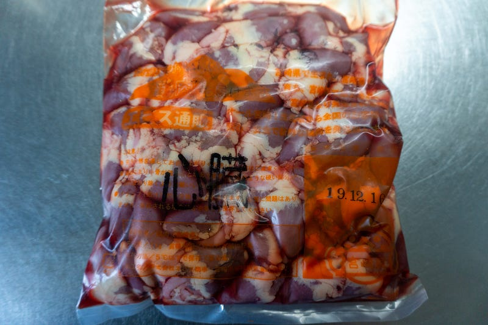
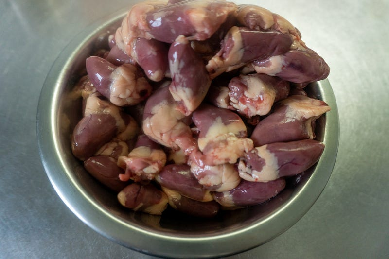
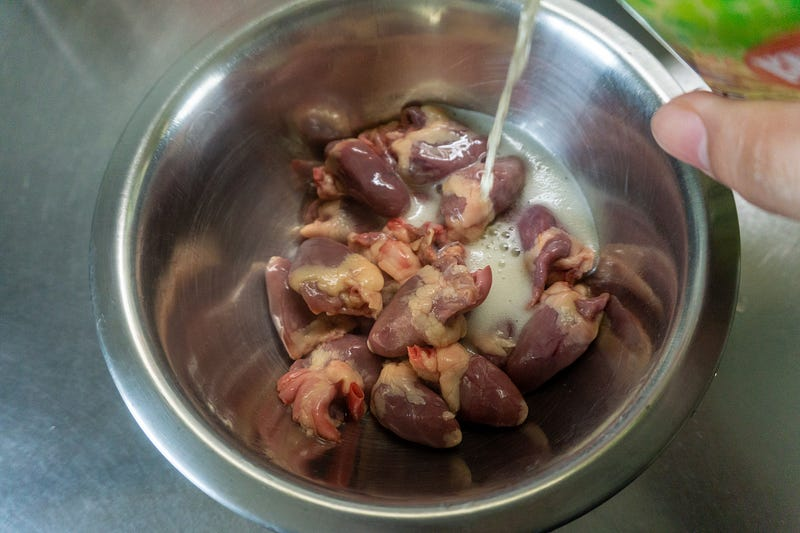
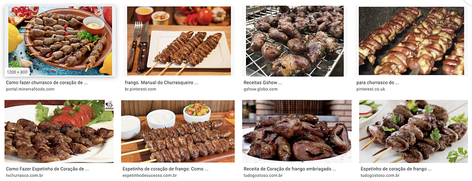
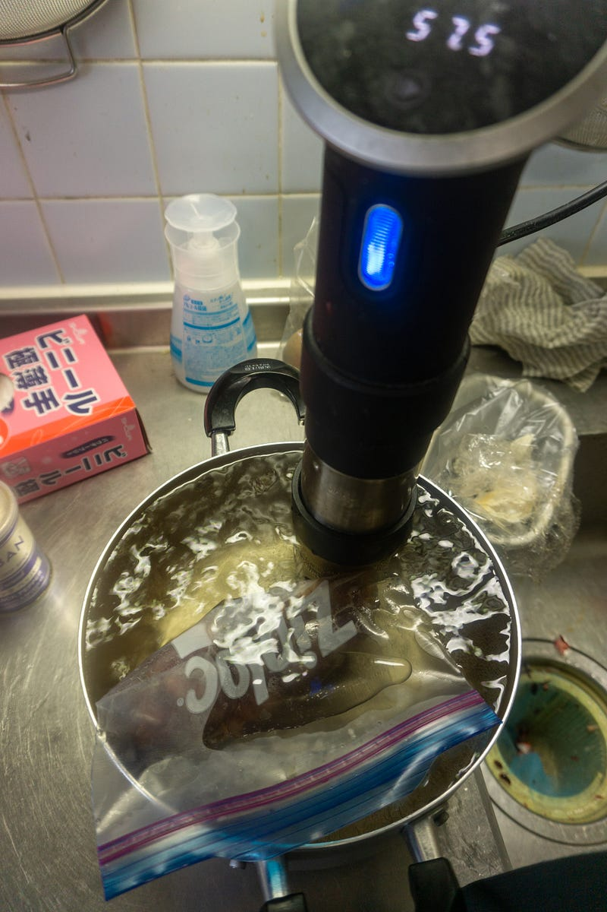
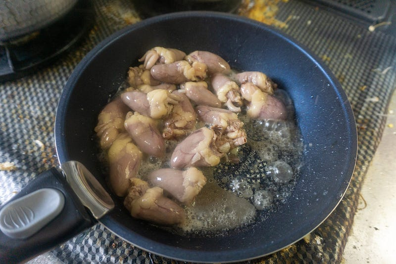
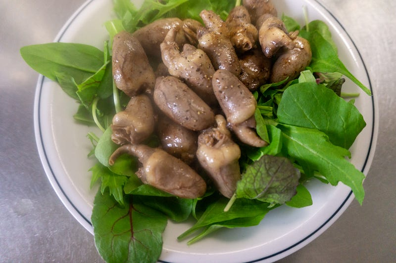
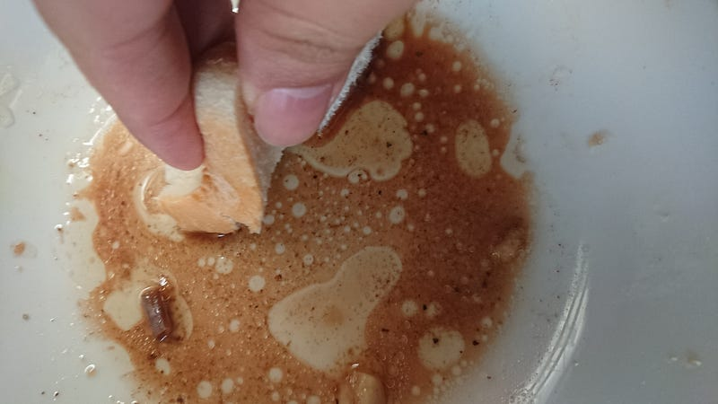

鶏ハツを低温調理する(coraçãozinhos — ブラジル風鶏ハツ焼き）
鶏ハツを低温調理する(coraçãozinhos — ブラジル風鶏ハツ焼き）
長男がインフルで伏せっているが、そんな日に限って数週間前にオーダーしていた生の鶏ハツが送られてくる。本当はそんな場合じゃないのだが、冷凍ではなくチルド配送なのでとにかく早めに食べるしかない… というわけで子供が寝ている間に、一番簡単だし、おいしいと思う焼き方で行く。
まずハツを1kg買います。

レバーと一緒に売っているハツをちょこちょこ食べるとかじゃなくて、鶏肉解体業者から直接ハツだけ仕入れましょう。
ハツは下処理をしないといけない。国産だろうがなんだろうが、ハツはどうやっても中にまだどすぐろい血の塊が少し残っている。別に残ってても食べられるけど、たくさん残っていると味がよくないので、できる限り出す。

ちなみに日本の焼き鳥とかの場合はハツを切って開く事によって、これらの不純物を取り出すが、そうじゃないんだ。俺はブラジルのシュラスコに出てくるハツを食いたいんだ。
なので水洗いをしつつ、心臓マッサージを施して一個一個中から固まった血を抜いていく。
ハツが洗えたら、ビールに浸します。ビールの他に、塩（きつめ、お好みで）とニンニクを適当に潰して切ったものも入れてマリネードしておく。
このビールが重要です。科学的な作用はわからないけど、ビールの香りがするのがブラジル風だと僕は信じております。

つけておく時間は30分くらいかなぁ。
話が前後しますが、ハツを切って開くのは非常に理にかなっている。そうすることによって火の通り加減もより制御できるし。でもぶりぶりっと口の中で肉汁があふれてくる食感を保ちたいんだ、俺は。

上の画像では全部竹串みたいなのを使ってるけど、シュラスコでは金属の串を使う。金串なら串を通して中まで熱がつたわって良い感じに焼ける。
では金串がない家庭でどうすればいいのか。
そうですね。anovaで低温調理ですね。57.5℃で30分〜1時間くらいやります。

肉に火が通ったら水分は捨てます。まぁ多少残ってても大丈夫。フライパンに油を引いて、強火で温めておきます。
油が十分温まったら、肉を投下。水分が残ってると油がはねるから気をつけて！

強火〜中火のまま、水分を飛ばし、少し焦げ色をつけたら、終了。あとは良い感じに盛りましょう。個人的なおすすめはルッコラを合わせた葉っぱ類と一緒に食べることですね。ルッコラの苦みとかは内臓系にとても合う。

外側はカリッと、中はぶりぶりっと、ジューシー。最高ですね。子供の看病をする必要がなければビールも飲みたいところです。

なお、肉を食べ終わったらパンで肉汁もちゃんとやっていきましょう。おじさんとの約束だぞ。